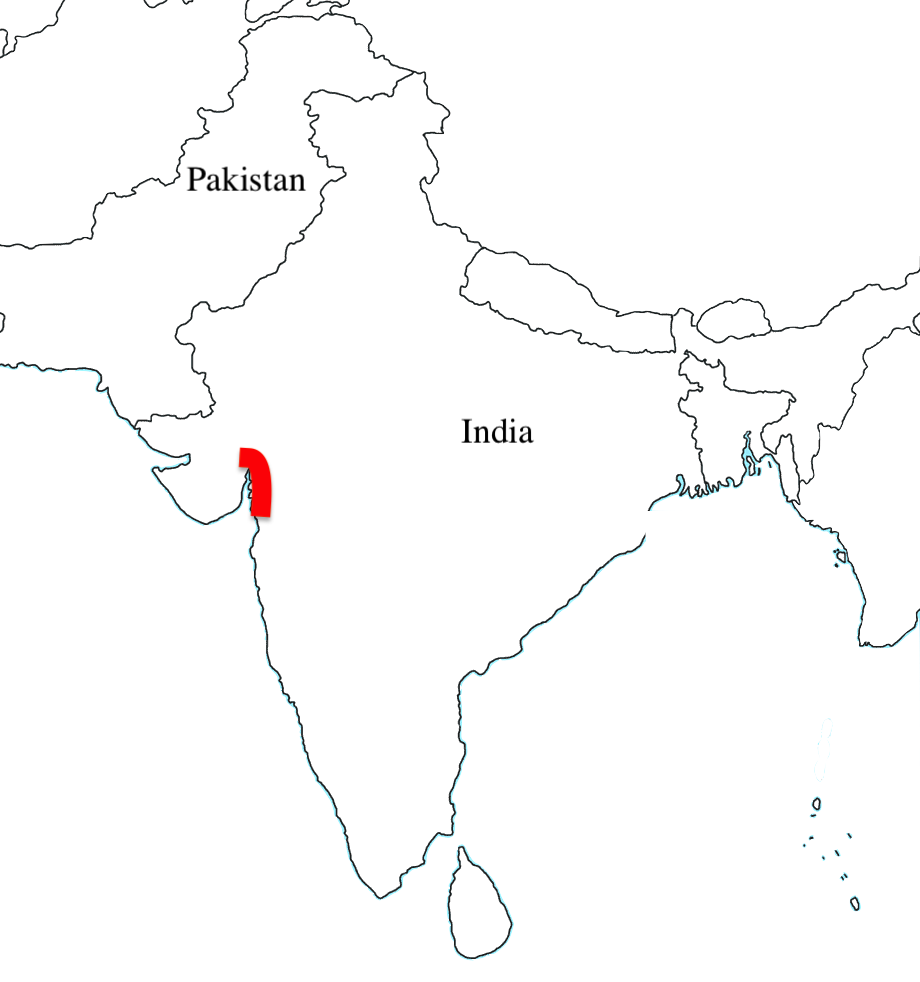

The Salt March was a peaceful protest that took place in Western India. Gandi organized it in April 1930. Gandhi and his followers peacefully protested the tax on salt. The march was against the British government's tax on alt and how they monopolized the salt tax and the ability to have it. This was one of Gandhi's most successful struggles and protests against the British government. This was significant because this helped fuel the revolution against the British. This paved the way for the revolution against india. (Britannica kids)
